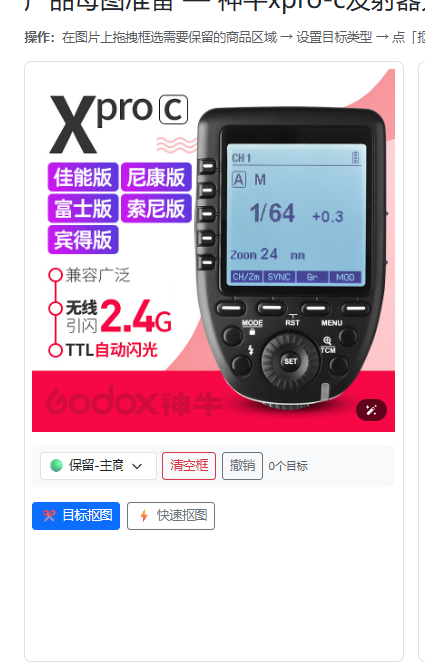
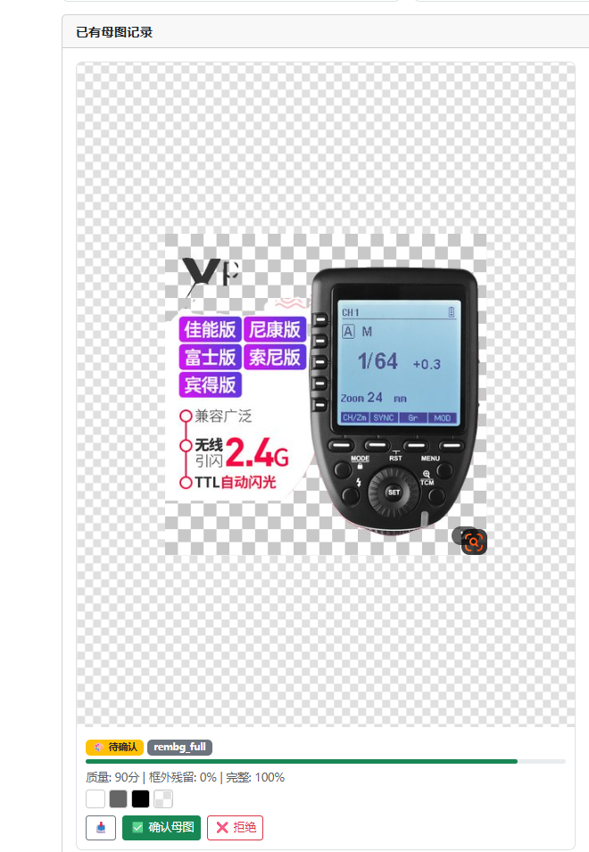
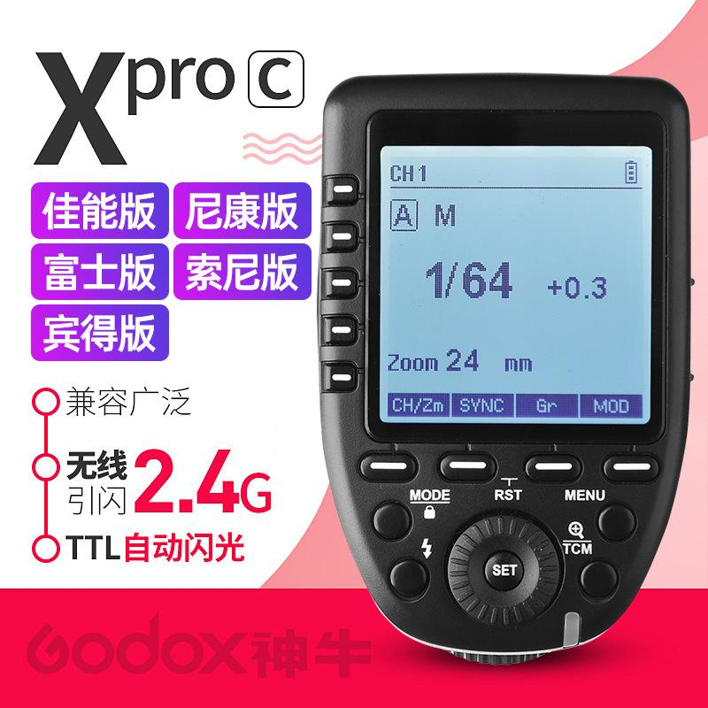

Product Cutout V4
从“整图抠背景”升级为“自动识别商品主体”
这份流程展示当前失败原因，以及改造后系统如何自动找到真正出售的商品、让用户快速确认，并在不重绘产品的前提下生成透明产品母图。
现在为什么没有得到正确结果
截图里已经给出了完整证据：没有目标框，却执行了整图 rembg，并被错误地评为高质量。


改造后的完整实施流程
点击任意步骤查看输入、系统动作、用户确认点和输出。默认不会直接自动批准。
载入原图与商品事实
原图、标题、类目、SKU 信息进入识别服务。
视觉模型识别主体
识别主商品、配件、广告文字、Logo 与背景装饰。
自动绘制目标框
绿色保留商品，蓝色保留配件，红色排除广告。
用户确认或微调
拖动、缩放或删除错误框，一次确认即可继续。
实例级分割
SAM 2 优先；未安装时采用 rembg_crop 回退。
原图像素合成
只生成蒙版，用原图 RGB + Alpha 得到透明 PNG。
质量门禁与批准
检查广告残留、完整性和像素真实性后才能批准。
步骤 01
载入原图与商品事实
系统读取商品原图，同时带入标题、类目与 SKU 信息，帮助视觉模型判断真正出售的对象。
- 输入原始 800×800 商品图片
- 带入“Godox XPro-C 无线引闪器”等商品信息
- 保留原图文件哈希，建立像素真实性基准

必须设置的四道门禁
自动识别的价值不是取消人工，而是把人工操作压缩成一次快速确认，并阻止系统产生“看起来成功”的错误结果。
Claude Code 实施顺序
先完成自动识别闭环，再接入更精确的分割模型，避免一次性改造过大。
分阶段开发
P0
自动识别闭环视觉模型输出商品及排除框；修复坐标；用户确认后 rembg_crop。
P1
精确分割接入 SAM 2 box prompt、正负点提示和蒙版微调。
P2
规模化SKU 母图、多配件识别、批量处理和生图工作流联动。
XPro-C 当前案例验收
自动识别右侧引闪器为唯一主商品
左侧广告文字与底部 Logo 被标红排除
结果 provider 为 sam2_box 或 rembg_crop
结果记录至少 1 个保留目标
产品屏幕、按钮、旋钮保持原图像素
框外前景残留低于 1%
失败结果不能显示“确认母图”
不存在自动回退 rembg_full